病毒进化与免疫应答
研究病毒变异与传播的分子基础、免疫压力驱动下的抗原变异机制，开展病毒进化路径预测与群体免疫监测，揭示病毒长期演化与公共健康风险之间的内在联系。
Limitless Wonder · 无限奇迹实验室
依托武汉大学生命科学学院与泰康生命医学中心，致力于病毒感染与免疫应答相关研究。
无限奇迹实验室（Limitless Wonder Laboratory，简称 LW Lab）依托武汉大学生命科学学院与泰康生命医学中心，由刘立鸿教授与王茜教授共同领导。实验室围绕病毒感染与免疫应答开展研究，秉持"以好奇驱动探索、以严谨对待研究"的理念，鼓励成员在扎实的理论基础之上开展有原创性的工作。
实验室现由两位导师、一位博士后和十八名硕博研究生组成，研究方向涵盖病毒进化与免疫、病毒与宿主相互作用、病原诊断、抗体与药物筛选、疫苗设计与基因治疗等（详见"研究"部分）。我们重视系统训练与开放讨论，组内定期组织文献研读与学术交流，支持成员参与学术会议并发表高水平成果。


研究病毒变异与传播的分子基础、免疫压力驱动下的抗原变异机制，开展病毒进化路径预测与群体免疫监测，揭示病毒长期演化与公共健康风险之间的内在联系。
研究病毒感染与宿主免疫应答的分子机制，解析病毒的免疫逃逸策略，为理解致病机理和发现干预靶点提供依据。
开发病原诊断方法，开展单克隆抗体分离与抗病毒药物筛选，支撑传染病的精准检测与临床干预。
开展新型疫苗的设计与免疫评估，探索基因治疗等干预策略，面向重要病毒性疾病构建防治新技术。
刘立鸿博士团队长期从事针对病毒感染和免疫应答的研究，着重在病原诊断、病毒和宿主相互作用、病毒免疫逃逸、抗体分离与药物筛选、疫苗设计和评估以及基因治疗等方向开展工作。
王茜博士长期从事病毒进化、感染机制及人体体液免疫应答等相关研究。未来将重点围绕病毒变异传播的分子基础、免疫压力驱动下的抗原变异机制、病毒进化路径预测以及群体免疫监测等方向开展工作，旨在揭示病毒长期演化与公共健康风险之间的内在联系。
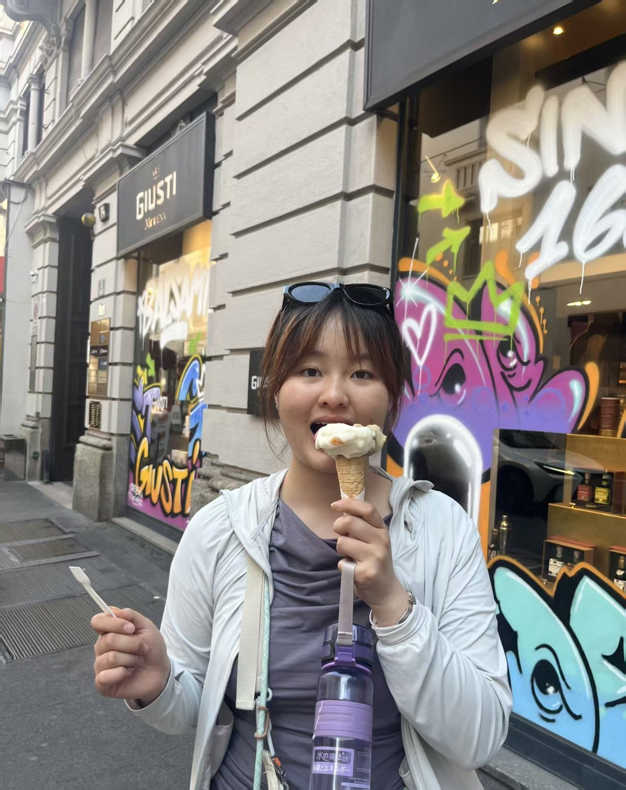
陈翀
Chong Chen · PhD
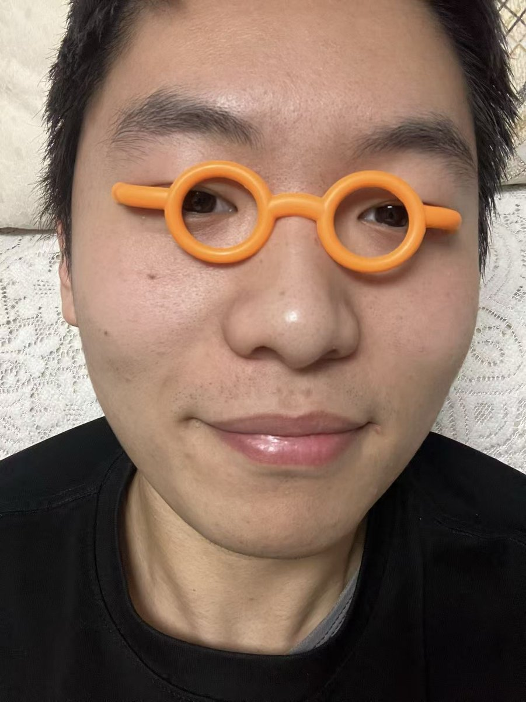
朱天昊
Tianhao Zhu · PhD
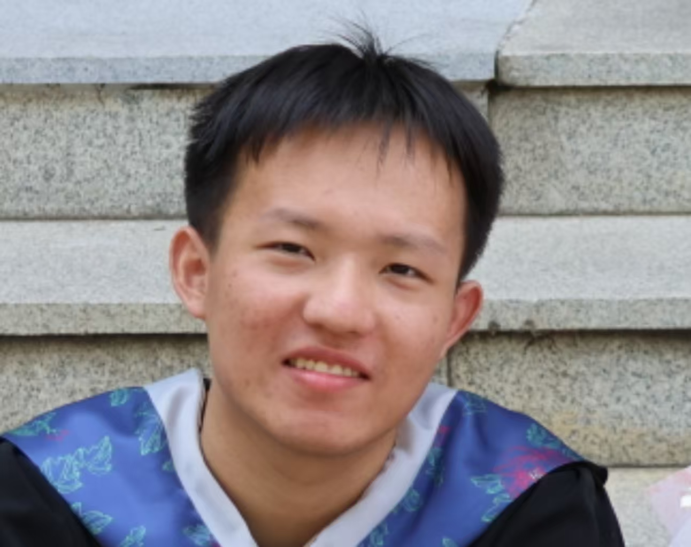
王创
Chuang Wang · PhD
董豹
Bao Dong · PhD
代欣
Xin Dai · PhD
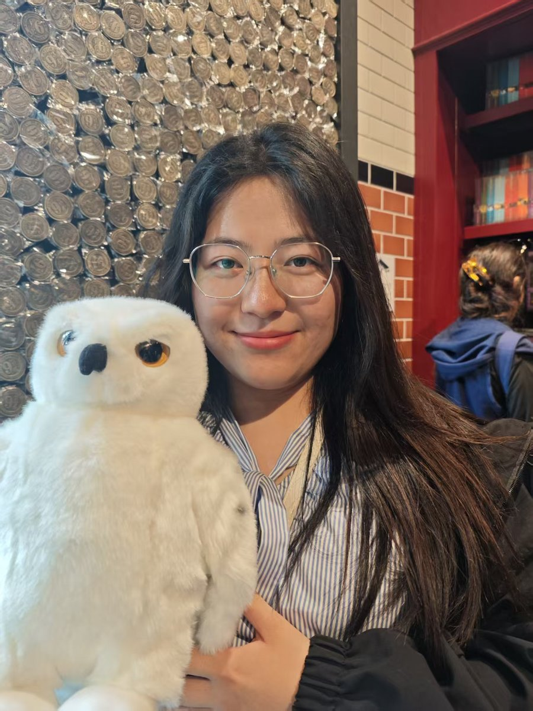
张舒艳
Shuyan Zhang · PhD
刘纯海
Chunhai Liu · PhD
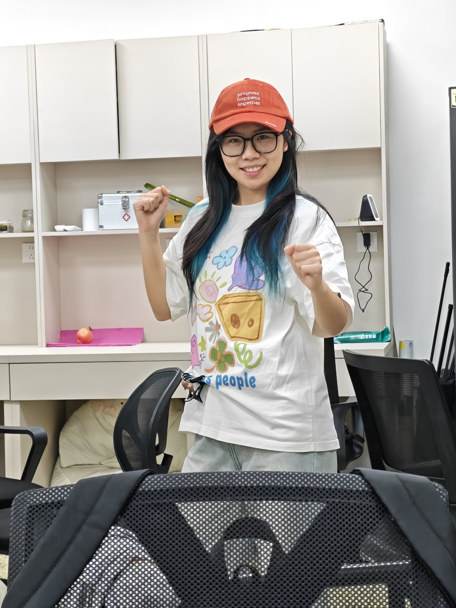
徐晨夏
Chenxia Xu · PhD
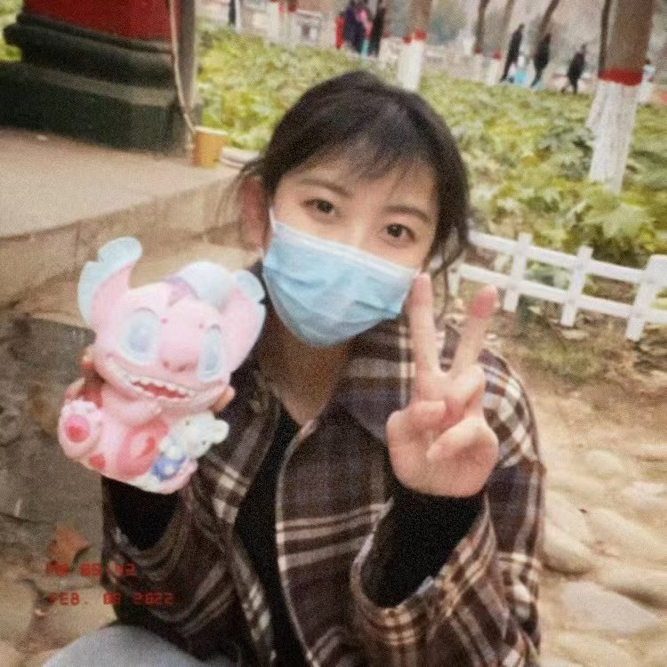
石兰芳
Lanfang Shi · PhD
韩娟
Juan Han · PhD
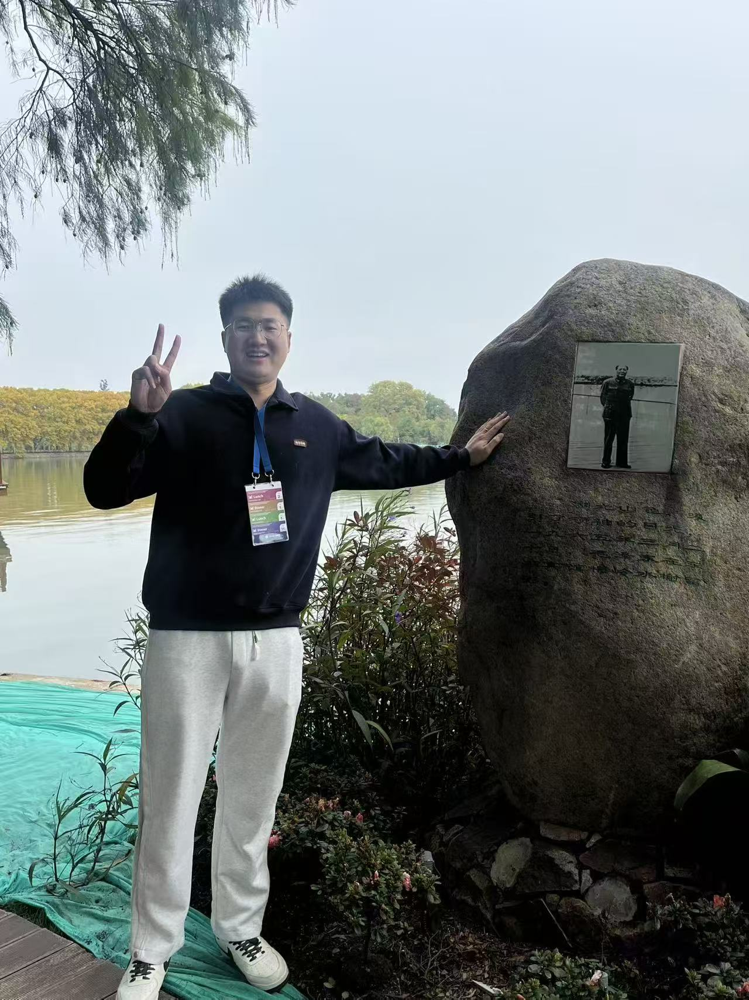
周世雄
Shixiong Zhou · Postdoc
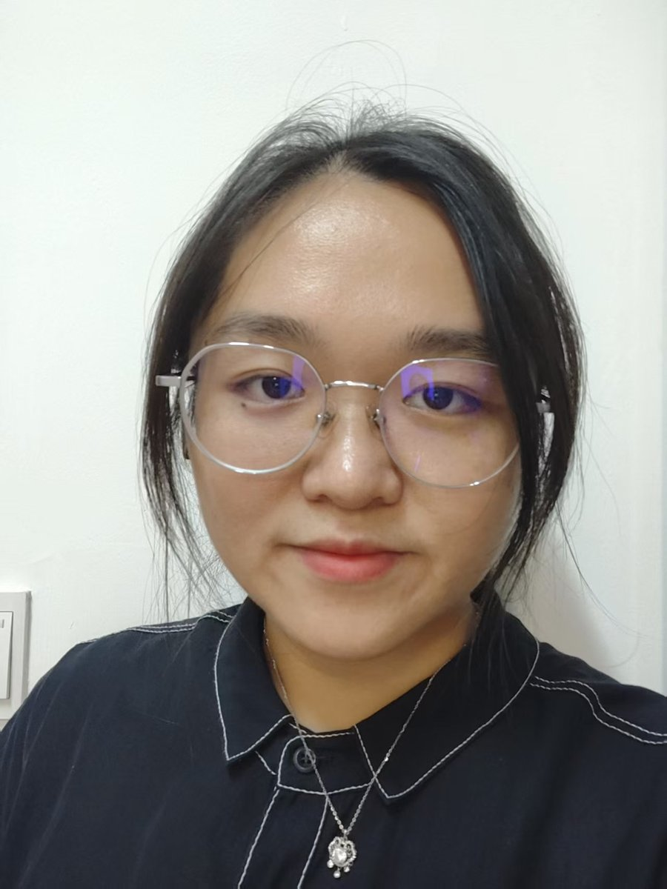
张玙璠
Yufan Zhang · Master
贾诗瑗
Shiyuan Jia · Master
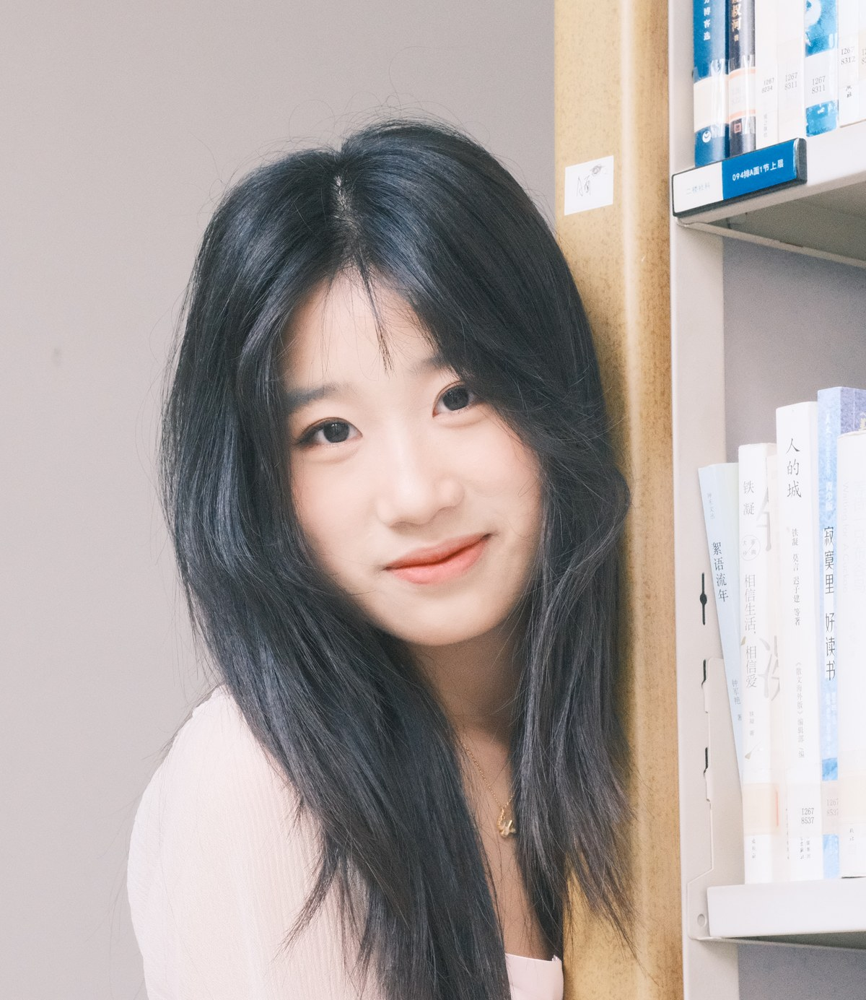
王梓焱
Ziyan Wang · Master
王紫璇
Zixuan Wang · Master
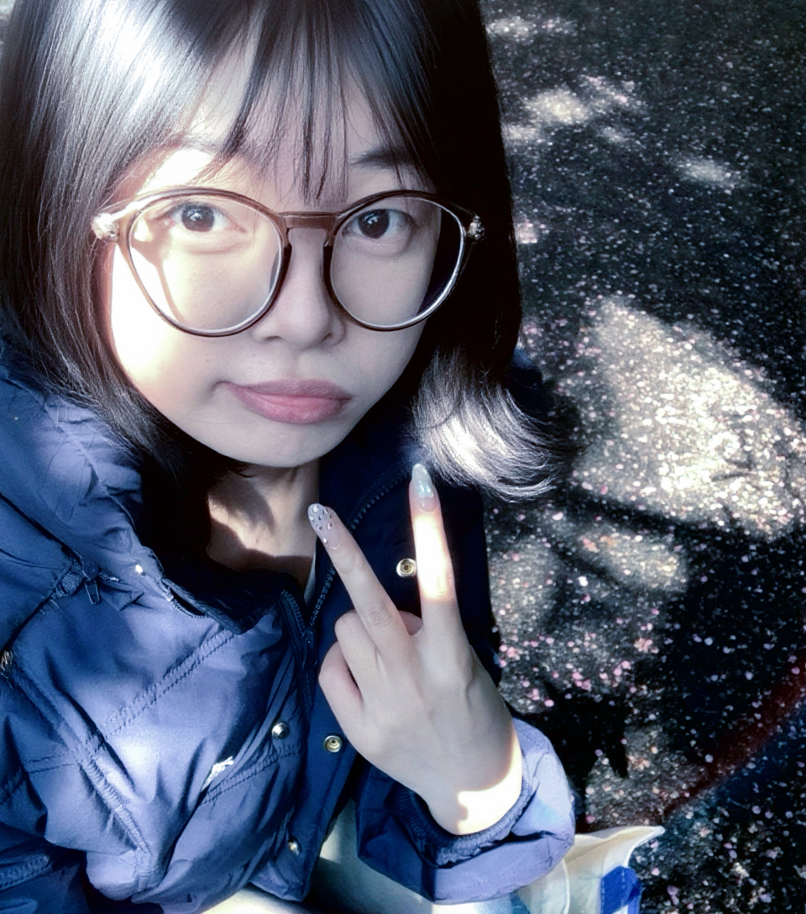
李彤彤
Tongtong Li · Master
李璟婕
Jingjie Li · Master
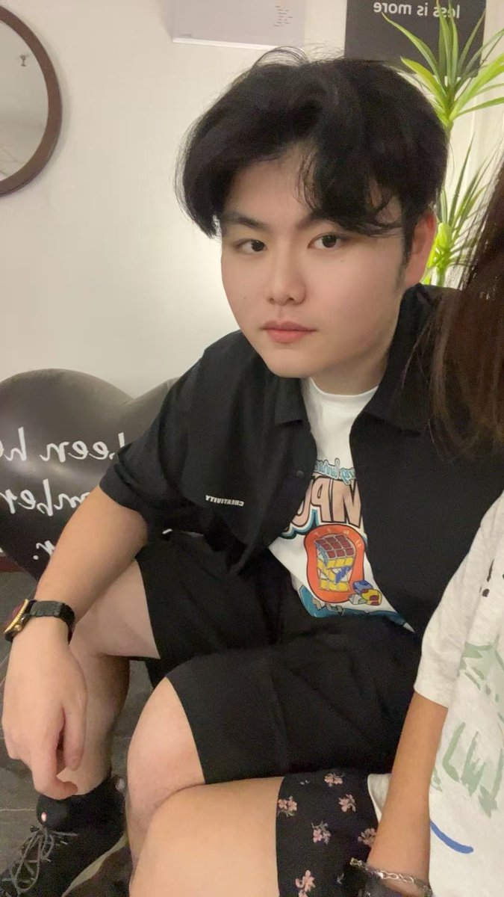
陈由洲
Youzhou Chen · Master
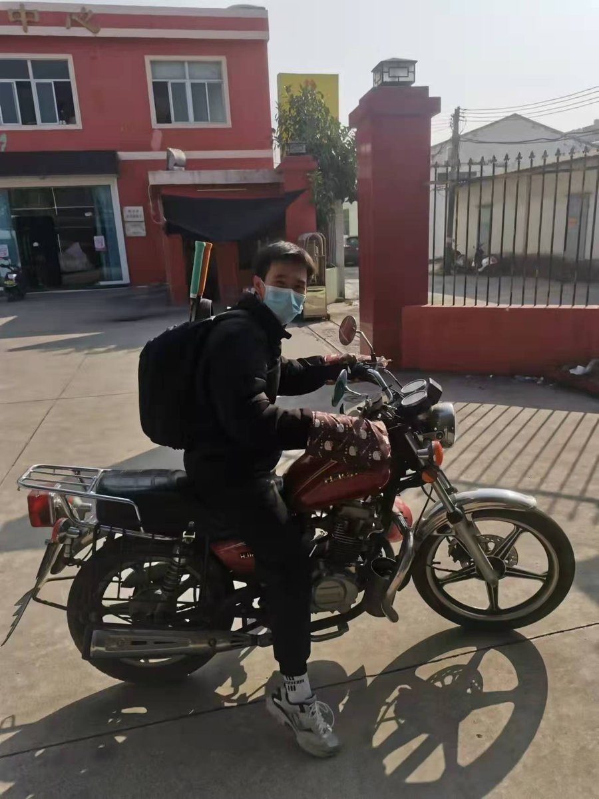
郑鑫浩
Xinhao Zheng · Master
实验室网站正式上线。
网站内容由实验室成员持续维护更新。
实验室论文发表于 Journal of Infection。
Zhou S, Liu C, Liu W, Cai K, Lan K, Zhu C, Wang Q, Liu L. Cross-neutralizing antibody responses to diverse coronaviruses in the human population. J Infect 2026;93(3):106827. doi: 10.1016/j.jinf.2026.106827
我们长期欢迎对研究怀有热情与好奇心的同学加入。如果你希望在扎实的学术训练中开展有原创性的工作，欢迎通过邮件与我们联系，并附上个人简历与简要的研究兴趣介绍。
联系邮箱：llh3411@whu.edu.cn
实验室位置：武汉大学生命科学学院 4013、4017 实验室